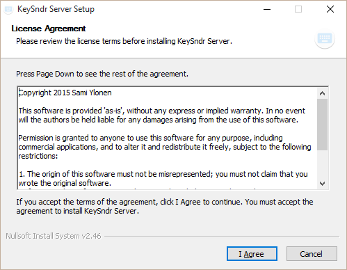
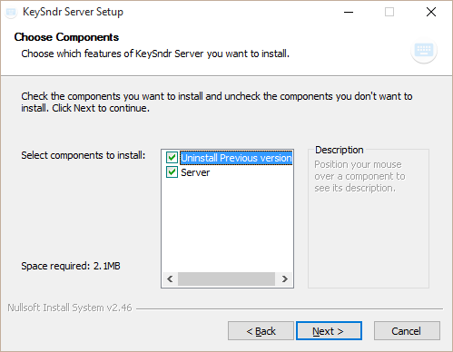
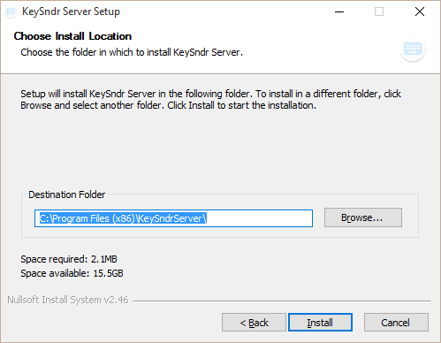
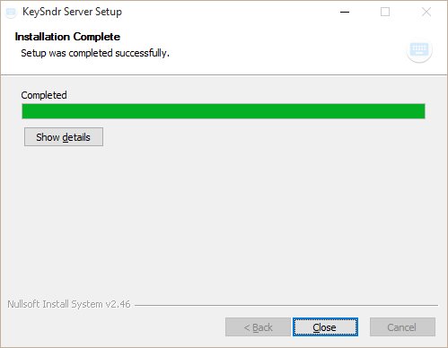
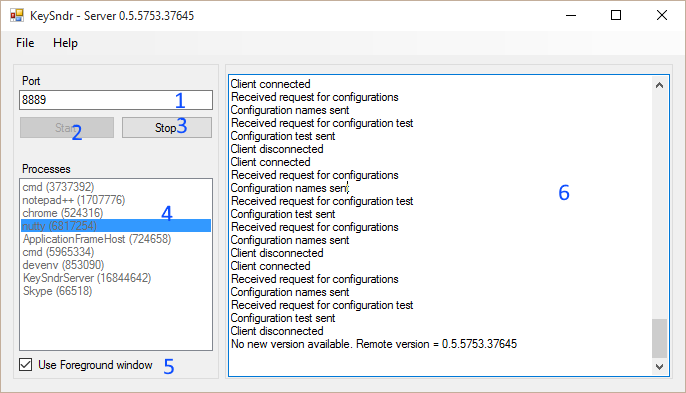
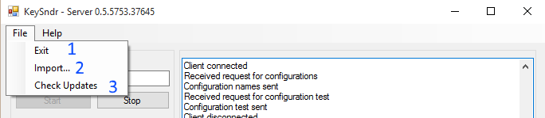

Sections
On your first run, the settings screen will be presented.
Here the client will automatically attempt to locate the server.
If the Ip and Port text fields are not filled in after few seconds, check that the server is running. Check that the server is on the same sub net as your android device is.
If none of these help, fill in these fields manually.
Top bar buttons from left to right
Dialog allows you to select a configuration from the server
* If this is the first run, another dialog will be presented for creating a new configuration.
Active configuration presented here.
Single click on any of the actions will be sent to the server.
Long click on the action will allow you to move, edit or delete the action.
Here you can change the name of the action, select text and background color and add new keyboard sequences.
Editing sequence keyboard entry
Sections
* Server configuration is stored at %localappdata%\KeySndr\app.json. For example C:\Users\user\AppData\Local\KeySndr\app.json

Installer started. Press "I Agree" to continue installation.
Choosing components. Currently, you really want to select both of these.
Choose install location.
Install finished. Press Close.

1. Fill in the port number. This should be a number between 1024 and 65355. Make sure that the port is not taken.
2. Server starts accepting connections on port defined in (1.). Server starts broadcasting in local network to help clients finding the server.
3. Server stops broadcasting and accepting connections. All existing connections are disconnected.
4. This area allows choosing an window which will receive keyboard input (unless selecting otherwise at (5.)). If the chosen window is not active, the server will set it active before sending the keyboard input
5. Choosing this will ignore selection made in (4.) and send keyboard input to current active window.
6. Relevant logging information is presented here.

1. Closes all connections and exits the application.
2. Allow importing an configuration file from harddrive. This could be an configuration made at this site.
3. Checks if there's an updated version of the server available.
Short video of KeySndr Android interface
Video showing KeySndr in action while playing Elite: Dangerous